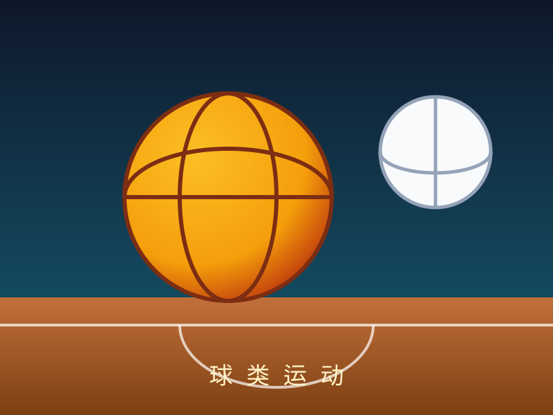

小罗
学号：SA225
学号：SA225
大家好，我是小罗，来自风景秀丽的江西，目前就读于网络空间安全学院 网安一班。我的 MBTI 是 INFP，性格安静内敛，做事专注， 喜欢在自己感兴趣的领域里深入钻研。
课余时间我喜欢两类事情：一是球类运动， 在球场上奔跑可以释放学习压力，也能培养团队配合的默契；二是听 Jazz（爵士乐），舒缓自由的旋律能让我快速放松、 重新集中注意力。

围绕人工智能应用开发方向，我为自己制定了清晰的短期与长期目标， 并在 职业技能页面 中列出了对应的能力清单。
系统打好深度学习基础，掌握 Agent 开发相关技术栈， 争取成为一名 Agent 开发实习生，在真实项目中积累工程经验。
持续深耕 AI Agent 与网络安全的交叉领域，成长为能独当一面的技术人才， 毕业后进入大厂，冲击百万年薪 offer。
小提示：点击浏览器邮件链接会自动唤起默认邮件客户端。